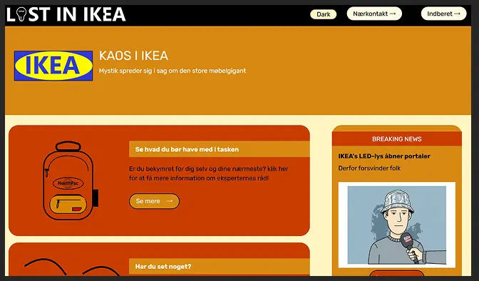
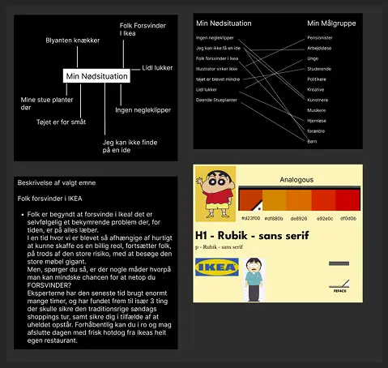
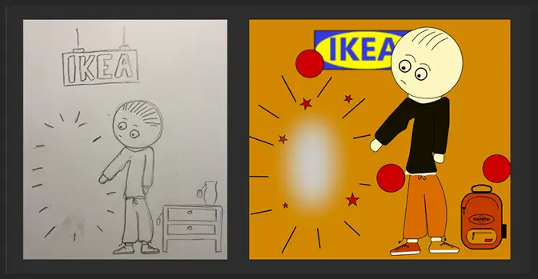
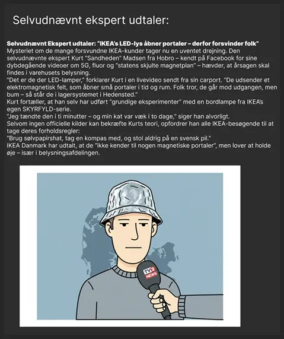
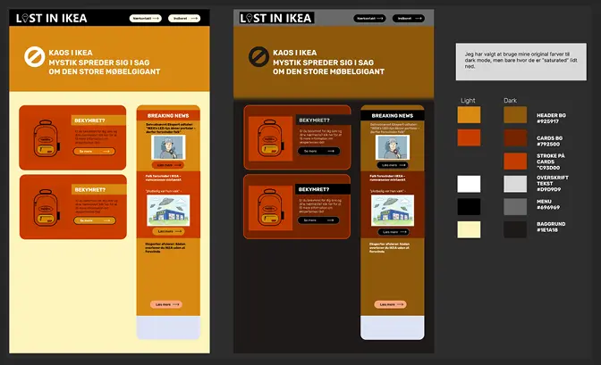
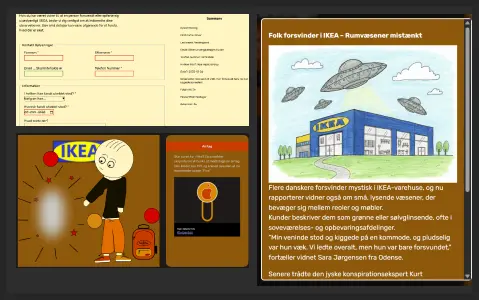

Tema 4
Emergency Site
In this theme, I worked with the development of user interfaces using HTML, CSS, and JavaScript. The focus was on combining visual design with functional frontend solutions. I explored interactive elements, responsive layouts, and basic accessibility considerations.
The final solution is a concept website developed with a clear focus on user interface design. The interface combines visual elements with interactive components to support usability. Design and functionality were developed in close connection throughout the process.

The project began with an ideation phase where concepts and visual directions were explored. Ideas were developed with help from exercises such as, "Crazy Eight, Brainstorm and peer to peer" and was in the end collected witch gave the building blocks for a styletile defining colors, typography, and other visual elements.

Custom illustrations and visual elements were developed to support the visual identity of the site. These elements were integrated as part of the user interface to enhance engagement. The visuals were adapted to match the overall style and target audience.

The interface was designed to work across different screen sizes. Responsive layouts were developed to ensure usability on both mobile and desktop devices. UI components were adjusted to maintain clarity and consistency across breakpoints.

This image shows an overview of interface components and visual states. CSS was used to style UI elements, manage layout, and support interaction. The focus was on creating a consistent and functional interface system.

The interface was supported by a small design system defining colors, typography, and components. This helped ensure consistency across the website and supported scalable development. Visual and functional elements were aligned throughout the project.
